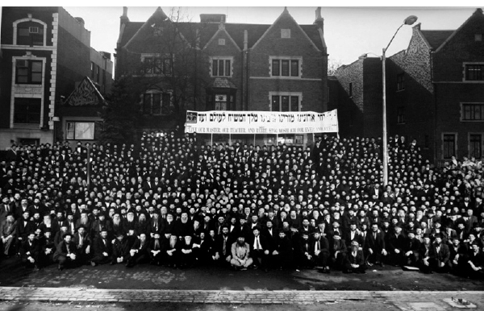

The Ultimate Test
Exerted from the keynote address at the banquet of Kinus HaShluchim HaOlami 5753
By Rabbi Pinchas Feldman
Head Shliach Sydney, Australia

Avrohom blazed the trail for all Jews. Avrohom our father worked with selfless devotion and sacrifice to bring G-d’s word to the ancient world of his times. The Rebbe shlita, like Avrohom Avinu, has devoted his life to bringing G-d’s word to the twentieth century. It didn’t come easy then, and it doesn’t come easy now
Each of us, together with thousands of shluchim around the world, serves as the spiritual conscience of the Jewish world. We can fulfill this role only thanks to the leadership of the spiritual giant of our generation—the Rebbe shlita.
Upon assuming the nesius, on Yud Shvat 5711, the Rebbe declared that we are working to bring Moshiach Tzidkeinu. From then until today, over forty years, Moshiach is a constant theme in all of the Rebbe’s talks and writings. The Rebbe has not moved from his statement that we will be the first generation of Redemption.
The Rebbe’s secretary, Rabbi Binyomin Klein, mentioned the amazing fact that through all the years that he merited to serve the Rebbe shlita, it never happened even once that the Rebbe’s promises didn’t fully materialize. Sometimes a bit of patience is necessary, but if we only have the strength and patience to do exactly as the Rebbe says we will not ever be disappointed.
The question is asked: What was really so special about Avrohom Avinu’s mesirus nefesh?
Great things are attained only through hard work; the greater the spiritual revelation to be attained the more difficult the task.
Hashem, therefore, tested Avrohom many times; ten times to be exact. The greatest test of all was the test of the Akeida of Yitzchok his son.
The expression that Hashem used when speaking to Avrohom regarding this last test was “Please take your son.” It was a request. The Talmud Sanhedrin explains that Hashem said: “I ask you, Avrohom. Please don’t disappoint me; I tested you in the past and you passed the tests. But now, I beg of you, be strong and pass this test with flying colors, so they won’t say that the other tests were worthless.”
The mefarshim ask: Why did Hashem doubt Avrohom’s faith when he put him to this test? Didn’t Avrohom already prove himself time and time again, beginning with the total mesirus nefesh of being thrown in a burning furnace, rather than denying Hashem? Didn’t he already prove himself by being ready to give up his very life for his faith? The explanation is alluded to in the Midrash which says on the pasuk “I and the child will go until here”: “Let us see what will come of the Hashem’s promise of my having children.” Avrohom Avinu wanted to see what would happen to Hashem’s promise that he would have children, now that Yitzchok would be sacrificed.
The Midrash says that the Satan came to Avrohom and said to him, “Avrohom! How can Hashem want you to kill your son? You have worked so hard to spread Elokus in the world. Such a horrible act of killing your own son will alienate many people from following your teachings. Are you not concerned that all your self-sacrifice until this day will be in vain? The whole world sees you as the epitome of good and kindness. Now they will think that you went mad, they will stop respecting your beliefs; they will dismiss you as irrelevant!”
The Satan indeed had a good argument: “All the souls that Avrohom and Sarah brought close to Yiddishkait will distance themselves from you. How will you begin again from scratch at your age? Hashem can’t seriously expect you to do something that will make a mockery of all his promises to you. Avrohom, be rational! You will be sacrificing your very faith in Hashem! Maybe you err in understanding Hashem’s word? Maybe you didn’t hear right? Otherwise, what meaning is there for His promise to you that you will have children?”
Extending Satan’s argument, I allow myself to further play “devil’s advocate.” Avrohom Avinu had a Yeshiva, as the Talmud says, “Avrohom sat in Yeshiva…” We all know well that in order to support an institution you need community support. In order to draw students you need community trust; the existence of the school necessitates that everyone see the head of the Yeshiva as a reasonable person who cares for the community. The Satan said to Avrohom Avinu, “If you will do this, you will lose the trust and support of the public. Your behavior was correct before you built your institutions, but now that you behave so irrationally, it will destroy all you achieved!…”
In light of the above, it is understood, that the test of the Akeida, the last test, was fundamentally different from all the other tests. Here Avrohom didn’t just have to sacrifice his physical being for the Will of Hashem. This was a test of nullification on the highest level – absolute surrender of even his spiritual self, in order to fulfill Hashem’s Will.
The sign of a true leader, especially the founder of a Jewish nation, is absolute surrender of his whole being to Hashem, including all his personal spiritual needs and goals.
This is the central message that the Rebbe gave us: to be like Avrohom Avinu, to know that our role in the world is the role of Avrohom Avinu, regarding whom it is said: “He called in the name of Hashem,” and the Talmud says: “He didn’t only call himself, but caused others to call.” It is not enough that we ourselves recognize the greatness of Hashem, but we must go out to every place where this message isn’t yet known.
The Rebbe’s leadership always focused on highlighting areas of Jewish life which had been neglected or forgotten. He brought them to the forefront of Jewish communal awareness. This was only possible through mesirus nefesh. The Rebbe didn’t always adopt easy positions which no one objected to. He took stands on what was right, even if it wasn’t popular. Throughout the years, our challenge as shluchim was to popularize unpopular ideas. This was so when the Rebbe began to speak about the “Baal T’shuva movement.” This was so about Yeshiva education, large families, Mihu Yehudi, Shleimus HaAretz and more. In time, after much hesitation, these ideas became better understood by the mainstream community.
The Rebbe is always challenging us. But thanks to their dedication and devotion to the Rebbe, the shluchim overcame their difficulties and proceeded from strength to strength.
Now, we face an unprecedented level and dimension in the years of the Rebbe’s leadership. The Rebbe gave us a role: to publicize his nevua — a real nevua – with all the Halachic implications of prophecy, that “Hinei Hinei Moshiach Ba!”
The Rebbe keeps emphasizing that Moshiach is a real thing; that we need to study about it, talk about it, publicize it, and “live” with it. At last year’s convention, the Rebbe taught us shluchim that the goal and objective of all our Yiddishkait activities all the days of our life is “to bring the days of Moshiach.” The life of a Jew is Torah and Mitzvos, and “all the days of your life” should be permeated by this main theme – “to bring the days of Moshiach.”
The Rebbe also told us that Moshiach should be publicized “b’ofen ha’miskabel.”
What does “b’ofen ha’miskabel” mean? It refers to the example of a teacher and student as explained in Chassidus. When the student is young and his mind and knowledge are limited, a teacher must use a moshel to explain the message in an interesting way, according to the student’s capabilities. The Rav must use the moshel in such a way that all the depth of the Rav’s teaching is clothed in the short message, or moshel. When the student works on understanding the message, he will then understand the essence. The message we deliver about Moshiach should contain the full depth of Moshiach as explained in the Rebbe’s talks. But exactly how and what to say depends on the type of place of every shliach, and everyone should judge what the “b’ofen ha’miskabel” is in his place.
Every shliach works to prepare his city so that the people there will be able to understand and know everything. But the shliach must deliver the words according to the level of the community. The message of Moshiach must be delivered with clarity and strength. Certainly, the fear of unwanted results is part of the test. When we pass a test, it is clear that things are not as bad as we imagined them to be.
Just like Avrohom Avinu passed the test and publicized Elokus in the world with self-sacrifice, so the publicity of the B’suras HaGeula of the Rebbe needs to be done with mesirus nefesh. Certainly the Rebbe himself – more than any other person – knows the possible problems that can be caused by this publicity. Despite this the Rebbe gave us this mission. We must utilize all methods possible to prepare the world for Moshiach.
All of us, like one man with one heart, are devoted to prepare for Moshiach with mesirus nefesh, and we must say clearly: There are no opposing camps in Lubavitch!
Yet this convention does not impose one approach on everyone. As brothers, we give each other our trust and rely on each other, as the Rebbe relies on each and every one of us to do the right thing. The right way is that every shliach will work on success in his city, and others will see and learn from them. The general direction was given to us by the Rebbe, the Geula is imminent and the preparation is our main task. Preparations in each specific place are not absolute. Every one of us should do it to the best of our potential. Let us honor each other for our true efforts and faithful work to fulfill the shlichus properly. There are different approaches to what is the best way, but when a shliach devotes himself to spread the message of Geula, we must respect what he does.
People ask how can we do work so with devotion, when the Rebbe is not well? Without trying to ‘justify ‘ Hashem’s ways, since understanding Hashgacha Pratis is beyond human capacity, it is important to know that the revelation of Moshiach is associated with Moshiach’s suffering for Am Yisroel, as mentioned in Tanach, Gemara and Kabbala.
The Pardes Yosef explains something interesting about the words that Moshe Rabbeinu stated when he came to redeem B’nei Yisroel: “Pakad Pakadeti – I have remembered.” These words were the ‘code’ of redemption. The Jews in Mitzrayim had a tradition going back to Yaakov Avinu that the Redeemer will say these very words.
But the question is: If everyone knew that the redeemer will say these words, how is it proof that he is a real redeemer, and not a pretender?
He answers this question with another question:
Why was Moshe Rabbeinu’s speech impaired? Yetzias Mitzrayim involved so many miracles, so couldn’t Hashem throw in just one more miracle and cure Moshe Rabbeinu so he could speak perfectly like anyone else? Wouldn’t it be nicer if the redeemer spoke clearly?
The explanation is that these specific words “Pakad Pakadeti” could not have been said correctly by a speech impaired person. When Moshe said these words, even though he usually stammered, this was the sign that he was indeed the redeemer, to announce that the Geula is truly on its way.
May we soon merit hearing the Rebbe say his message, with clear speech, and all will recognize that the Redemption has arrived!
The Rebbe mentions in his famous letter that since he was a child, even before he went to cheider, he envisioned the wonderful redemption in such a way that would explain and justify all the pains of exile. When Moshiach will come, we will finally understand how all the pain was for the good.
We fully believe that the day isn’t far when all of Am Yisroel will join us in proclaiming: “Yechi Adoneinu Moreinu v’Rabbeinu Melech HaMoshiach L’olam Va’ed!”
Reprinted from the Kfar Chabad English Magazine Teves 5754
Beis Moshiach (staff). "The Ultimate Test." Beis Moshiach, no. 900 (October 29, 2013).